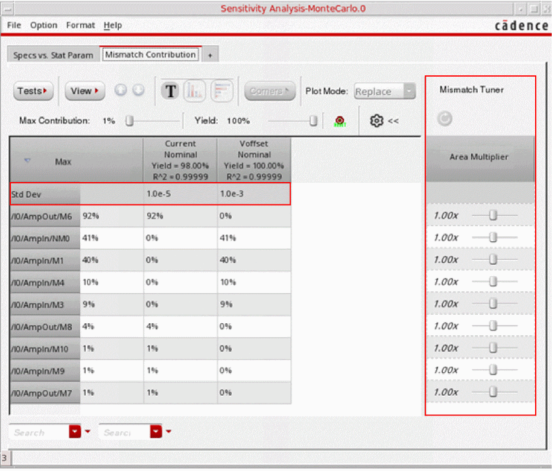
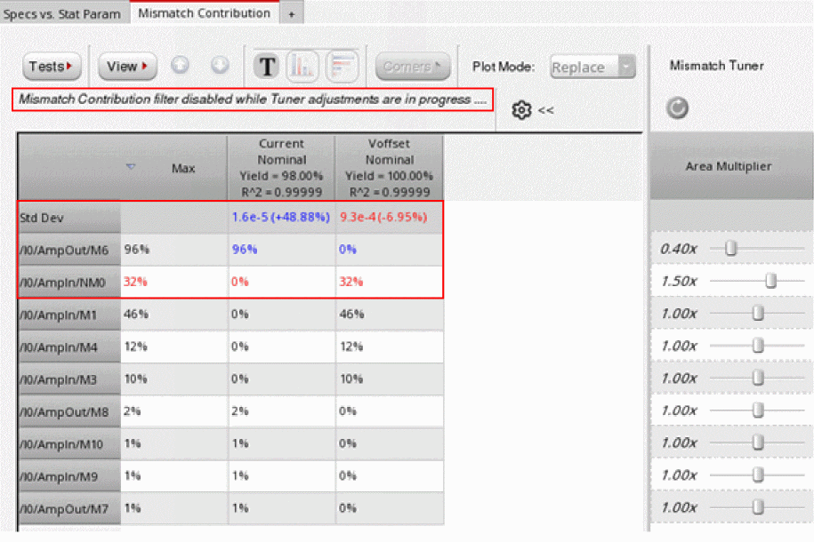

Running What-If Analysis
You can use Mismatch Tuner on the Mismatch Contribution tab to perform what-if analysis on how a change in the size of any device instance impacts the variation of the circuit output. The mismatch tuner helps you tune the contribution of an instance by changing its area multiplier.
The Open the Mismatch Tuner command is disabled if the instances are displayed in the Hierarchical view. You need to change the view to the Flat view by using the View command in the toolbar of the Mismatch Contribution tab.
To identify the impact of a change in the size of a device on the variation of the circuit output:
-
On the Mismatch Contribution tab, click the Open the Mismatch Tuner command.
For each instance, a row is added to the Mismatch Tuner pane. Each row has a slider to change the area multiplier of the corresponding instance. In addition, the Std Dev row is displayed as the first row in the Mismatch Contribution table. This row displays the standard deviation for each output.
 -
Drag the slider on the Mismatch Tuner to the left or to the right to decrease or increase the size of the corresponding instance. You can also change the size by typing a value in the range of
0.1–10in the text field to the left of the slider.
The predicted standard deviation values due to the change in the instance size are shown in the Std Dev row. In addition, the value in parenthesis shows the percent change in value. If there is any change in the standard deviation of any specification, its value is displayed in red or blue to indicate a negative or positive impact on the variation of that specification.
The variance contribution value for that instance is also updated in the corresponding row. The updated values are displayed in blue or red. -
Continue to change the area multiplier for different devices until the desired changes in the standard deviation for the specifications is achieved. You can later reflect these changes in the design by modifying the instance parameters in the Variables and Parameters assistant or by modifying the schematic.
The transistor area can be increased by maintaining the width-to-length ratio (w/l) and simultaneously increasing both the width (w) and length (l) of the transistor by a certain factor. For example, to increase the transistor area by2xwhile maintaining thew/lratio, you can increase bothwandlby the square root of2.
- You can clear all the multipliers by using the Reset table to original contribution values command on top-left corner of the Mismatch Tuner.
- When the Mismatch Tuner is open, the variance contribution values are displayed only in the numerical format. If data is displayed in vertical or horizontal bar graphs, the data its format automatically changes to numerical when you open the Mismatch Tuner.
- The mismatch contribution and yield filters are hidden when the Mismatch Tuner is in progress.
- You cannot descend or ascend through the design hierarchy while the Mismatch Tuner is open.
Related Topics
Mismatch Contribution Analysis
Viewing Results of Mismatch Contribution Analysis
The Mismatch Contribution Table
Toolbar of the Mismatch Contribution Tab
Return to top